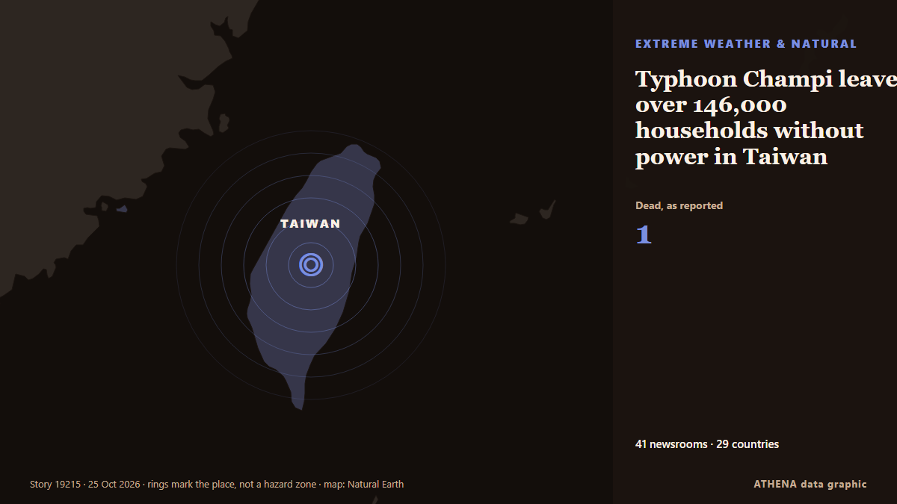

Typhoon Champi leaves over 146,000 households without power in Taiwan

Taiwan issued a land warning on Thursday as powerful Typhoon Champi approached, prompting more than 200 flight cancellations in the region and forcing changes to a major U.S.-Japan military exercise. de VnExpress International
Informado de forma independiente por 41 medios de 29 países desde el 22 oct; el primero fue Bangkok Post — page reader; la cobertura va perdiendo fuerza. ATHENA califica el riesgo como elevado (5.8/10), sobre todo por la gravedad del daño descrito y su alcance geográfico y sectorial. La confianza es del 88 % (alta): lo corroboran 41 medios independientes, con una fiabilidad media de las fuentes del 74 %. Quién lo informó: 5 medios en Arabia Saudí · Saudi Arabia, 3 medios en Reino Unido · United Kingdom, 3 medios en RAE de Hong Kong (China) · Hong Kong. La cobertura fue de 22 oct a 24 oct, durante 44 horas.
Por qué importa: Pekín reivindica Taiwán, que se gobierna a sí misma; EE. UU. y sus aliados vigilan de cerca el estrecho de Taiwán. Las maniobras militares, la diplomacia y las noticias de los chips pueden mover los mercados de todo el mundo.
Qué ha cambiado: 5 informaciones nuevas de 5 redacciones en las 24 horas hasta el 25 oct.
Primer titular: Taiwan shuts down as Typhoon Champi approaches
Los titulares se muestran en inglés, tal como se publicaron.
De un vistazo
Seleccionado, puntuado y redactado por la metodología publicada de ATHENA. Ningún editor interviene en eventos concretos. Cómo se elabora ›
| 22 Oct 07:07 UTC | 6 |
|---|---|
| 22 Oct 10:07 UTC | 0 |
| 22 Oct 13:07 UTC | 0 |
| 22 Oct 16:07 UTC | 2 |
| 22 Oct 19:07 UTC | 0 |
| 22 Oct 22:07 UTC | 0 |
| 23 Oct 01:07 UTC | 4 |
| 23 Oct 04:07 UTC | 8 |
| 23 Oct 07:07 UTC | 6 |
| 23 Oct 10:07 UTC | 3 |
| 23 Oct 13:07 UTC | 1 |
| 23 Oct 16:07 UTC | 2 |
| 23 Oct 19:07 UTC | 0 |
| 23 Oct 22:07 UTC | 1 |
| 24 Oct 01:07 UTC | 7 |
| 24 Oct 04:07 UTC | 6 |
| 24 Oct 07:07 UTC | 4 |
| 24 Oct 10:07 UTC | 2 |
| 24 Oct 13:07 UTC | 0 |
| 24 Oct 16:07 UTC | 0 |
| 24 Oct 19:07 UTC | 0 |
| 24 Oct 22:07 UTC | 0 |
| 25 Oct 01:07 UTC | 0 |
| 25 Oct 04:07 UTC | 0 |
| 25 Oct 07:07 UTC | 1 |
| 22 Oct 07:07 UTC | 3.9 |
|---|---|
| 22 Oct 08:39 UTC | 5.4 |
| 22 Oct 08:40 UTC | 6.3 |
| 22 Oct 08:45 UTC | 5.6 |
| 22 Oct 08:47 UTC | 6.6 |
| 23 Oct 06:46 UTC | 6.9 |
| 23 Oct 07:33 UTC | 7.1 |
| 23 Oct 12:52 UTC | 6.6 |
| 23 Oct 23:36 UTC | 6.4 |
| 24 Oct 08:31 UTC | 6.6 |
| 24 Oct 12:54 UTC | 5.9 |
| 25 Oct 08:30 UTC | 5.8 |
| 25 Oct 08:30 UTC | 5.8 |
Por qué estas cifras
Importancia
Riesgo
Confianza
La cobertura: quién informó y cuándo
titular tal como se publicó · abre el original- Bangkok Post — page reader · Tailandia · ThailandAir travellers alerted as typhoon warning issued in Taiwan
- VnExpress International · VietnamTyphoon Champi nears Taiwan, causing 200 flight cancellations and disrupting US-Japan drills
- Phys.org · Reino Unido · United KingdomTaiwan issues warnings as Typhoon Champi nears
- South China Morning Post · RAE de Hong Kong (China) · Hong KongSuper Typhoon Champi: Hong Kong airlines cancel at least 12 Taiwan, Japan flights
- Arab News · Arabia Saudí · Saudi ArabiaTaiwan issues warnings as Typhoon Champi nears
- Asharq Al-Awsat (English) · Arabia Saudí · Saudi ArabiaTaiwan Issues Warnings as Typhoon Champi Nears
- Anadolu Agency (English) · Turquía · TurkeyTaiwan orders near-total shutdown ahead of Typhoon Champi
- The New York Times (World) · Estados Unidos · United StatesAs Typhoon Champi Nears, Taiwan’s Mayors Bet on a Popular Day Off
- Gulf News · Emiratos Árabes Unidos · United Arab EmiratesTaiwan shuts down as Typhoon Champi approaches
- Rappler · Filipinas · PhilippinesTaiwan shuts down ahead of typhoon, hundreds of flights canceled
- France 24 English · Francia · FranceTaiwan shuts down schools and businesses as Typhoon Champi approaches
- DigiTimes Asia · Taiwán · TaiwanTaiwan sits out global chip selloff, thanks to typhoon
- South China Morning Post · RAE de Hong Kong (China) · Hong KongHonduras squeezes Chinese firms; Super Typhoon Champi nears Taiwan: SCMP’s 7 highlights
- The Korea Times · Corea del Sur · South KoreaTaiwan shuts down ahead of Typhoon Champi, hundreds of flights canceled
- South China Morning Post · RAE de Hong Kong (China) · Hong KongTyphoon Champi disrupts more than 70 flights between Hong Kong and Taiwan
- DW English · Alemania · GermanyTaiwan braces as El Nino-supercharged Typhoon Champi approaches island
- Bangkok Post — page reader · Tailandia · ThailandTyphoon forces Thai Airways to cancel Taiwan flights
- ABC News (International) · Estados Unidos · United StatesTaiwan shuts schools and grounds flights as Typhoon Champi brushes by
- Asharq Al-Awsat (English) · Arabia Saudí · Saudi ArabiaTaiwan Shuts Schools and Grounds Flights as Typhoon Champi Brushes by
- IOL · Sudáfrica · South AfricaTaiwan shuts down as Typhoon Champi approaches
- Euronews English · Francia · FranceTaiwan: Deadly Typhoon Champi brings travel chaos and school closures
- Anadolu Agency (English) · Turquía · TurkeyTyphoon kills 1, injures dozens in Taiwan, disrupts air traffic
- BBC News · Reino Unido · United KingdomHundreds of flights cancelled as Typhoon Champi shuts Taiwan
- ABC News Australia · AustraliaTaiwan shuts down and grounds flights ahead of Typhoon Champi
- Daily Maverick · Sudáfrica · South AfricaTaiwan shuts down ahead of Typhoon Champi, nearly 1,000 flights cancelled
- Arab News · Arabia Saudí · Saudi ArabiaTaiwan shuts down as Typhoon Champi approaches
- MyJoyOnline · GhanaHundreds of flights cancelled as Typhoon Champi shuts Taiwan
- CBC News · Canadá · CanadaHundreds of flights cancelled, schools closed as Typhoon Champi hits Taiwan
- Al Jazeera English · Catar · QatarTyphoon Champi unleashes huge waves along Taiwan’s coast
- Oman Observer · Omán · OmanYILAN/KEELUNG
- Mongabay · Estados Unidos · United StatesTaiwan shuts schools and grounds flights as Typhoon Champi brushes by
- Taipei Times · Taiwán · TaiwanTyphoon Champi shuts down Taiwan
- Al Jazeera English · Catar · QatarTyphoon Champi hits Taiwan, killing one and injuring hundreds
- Mainichi (English) · Japón · JapanTaiwan shuts schools and grounds flights as Typhoon Champi brushes by
- Arab News · Arabia Saudí · Saudi ArabiaTyphoon Champi sweeps past Taiwan, one dead and 500 injured
- Times of India · IndiaWatch: Giant waves crash into Taiwan as Typhoon Champi leaves over 500 injured; 1 dead
- The Guardian · Reino Unido · United KingdomTyphoon Champi kills one and injures more than 500 in Taiwan as it heads to China
- VnExpress International · VietnamTaiwan warns of 'destructive winds' as Typhoon Champi batters island
- TASS (English) · Rusia · RussiaAt least 500 people affected by typhoon Champi in Taiwan
- CNA (Channel NewsAsia) · Singapur · SingaporeTaiwan counts 1 dead and 527 injured after Typhoon Champi sweeps past